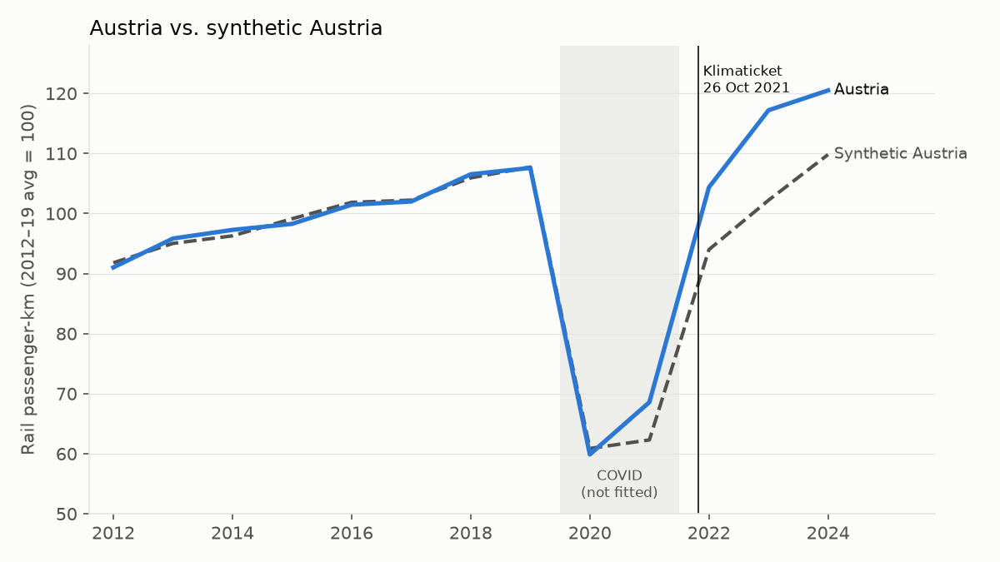
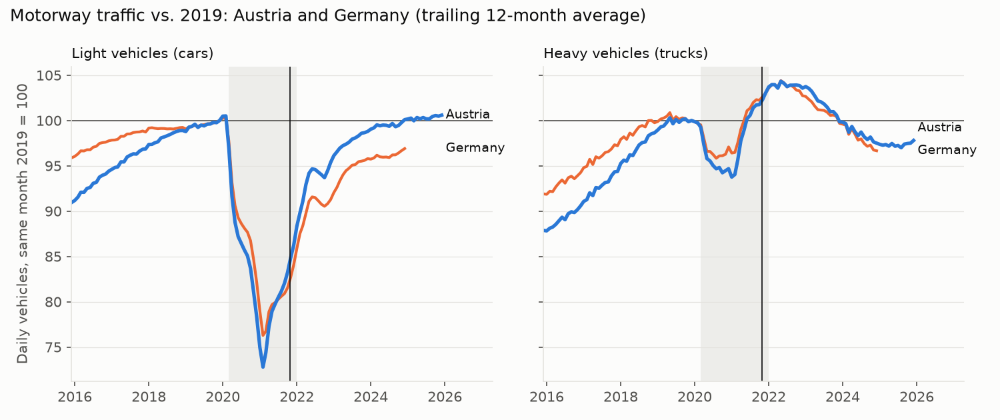
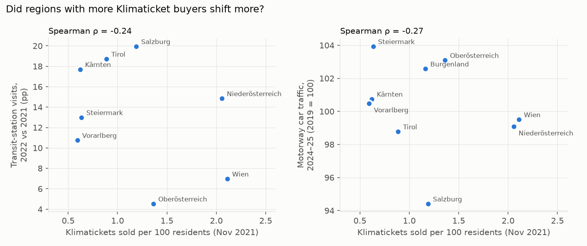

More train travel.
Less driving?
Austria’s rail recovery looks strong. Separating the KlimaTicket from the pandemic rebound tells a more cautious story about its effect on car use.
- +12%
- rail vs. synthetic control, 2022–24
- +3 pts
- car traffic vs. Germany, relative to 2019
- 22%
- trips replaced a car trip, survey
Four tests, each removing one confounder
COVID, the economy, fuel prices and working from home all moved at the same time as the ticket.
- Compare with 2019, not with 2020 or 2021. The question is who got back above their pre-pandemic level.
- Synthetic control: a weighted mix of ten European rail systems that tracked Austria within 0.7 points from 2012 to 2019.
- Roads abroad: German motorway counts as the control. Trucks stand in for the economy, cars for the shift.
- Dose and response: regions where more people bought the ticket should shift more.
Rail use pulled ahead of the counterfactual
Austrian rail travel ran 10 to 15% above its synthetic control after the launch. That gap is large, but not unusual. In a placebo test, where each comparison country gets the ticket instead, Austria ranks second of eight. France shows a similar gap with no comparable ticket, and dropping Denmark from the pool shrinks Austria's 2024 gap to 2 points.

Austria drove more than Germany, not less
Motorway truck traffic in Austria and Germany has moved within a point of each other since 2021, yet Austrian car traffic recovered further than Germany's. Regions with the most ticket holders did not shift more either. The likeliest reading: the KlimaTicket made public transport cheaper for people who already used it, which matches the official survey.


Data and method
- Data
- Eurostat, ASFINAG, BASt, Google mobility
- Method
- Synthetic control, placebos, cross-country counts
- Verdict
- More train travel, no measurable fall in driving